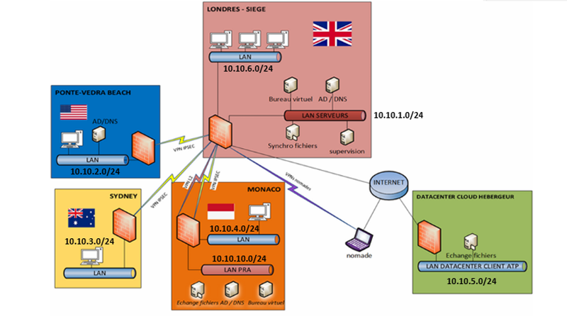

ARCHITECTURE & INFRASTRUCTURE RÉSEAU
Infrastructure SI Hybride Sécurisée & Haute Disponibilité
#VMware_vSphere #pfSense_HA_CARP #IPsec #Zabbix #PRA_PCA
> 1. Contexte & Enjeux
Mise en place d'une infrastructure d'entreprise hautement disponible et sécurisée répartie sur deux sites interconnectés, avec réplication des services critiques, stratégie de continuité d'activité (PCA/PRA) et supervision proactive.
> 2. Schéma d'Architecture Réseau
INTERCONNEXION MULTI-SITES & CLUSTER HAUTE DISPONIBILITÉ

Cliquez sur le schéma pour l'ouvrir en haute définition.
> 3. Composants Techniques Déployés
-
Cœur de réseau & Sécurité : Cluster de pare-feux pfSense en synchronisation d'état (pfsync) et bascule automatique IP virtuelle (CARP), segmentation fine par VLANs (DMZ, Administration, Production, Interconnexion).
-
Interconnexion sécurisée : Tunnel VPN IPsec redondé inter-sites avec chiffrement robuste pour le transit des flux métiers et réplications.
-
Virtualisation & Services : Hyperviseurs VMware ESXi managés par vCenter Server, contrôleurs de domaine Active Directory répliqués, DNS et DHCP sécurisés.
-
Supervision & Continuité : Monitoring complet via Zabbix (agents et sondes SNMP), cartographie des métriques clés et procédure de bascule PRA validée.